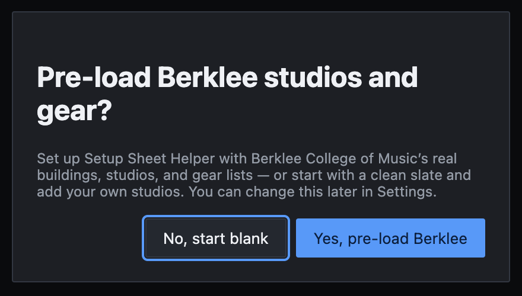
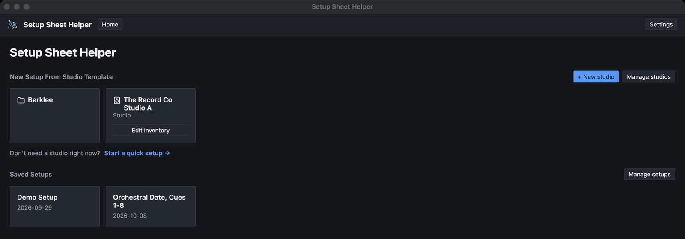
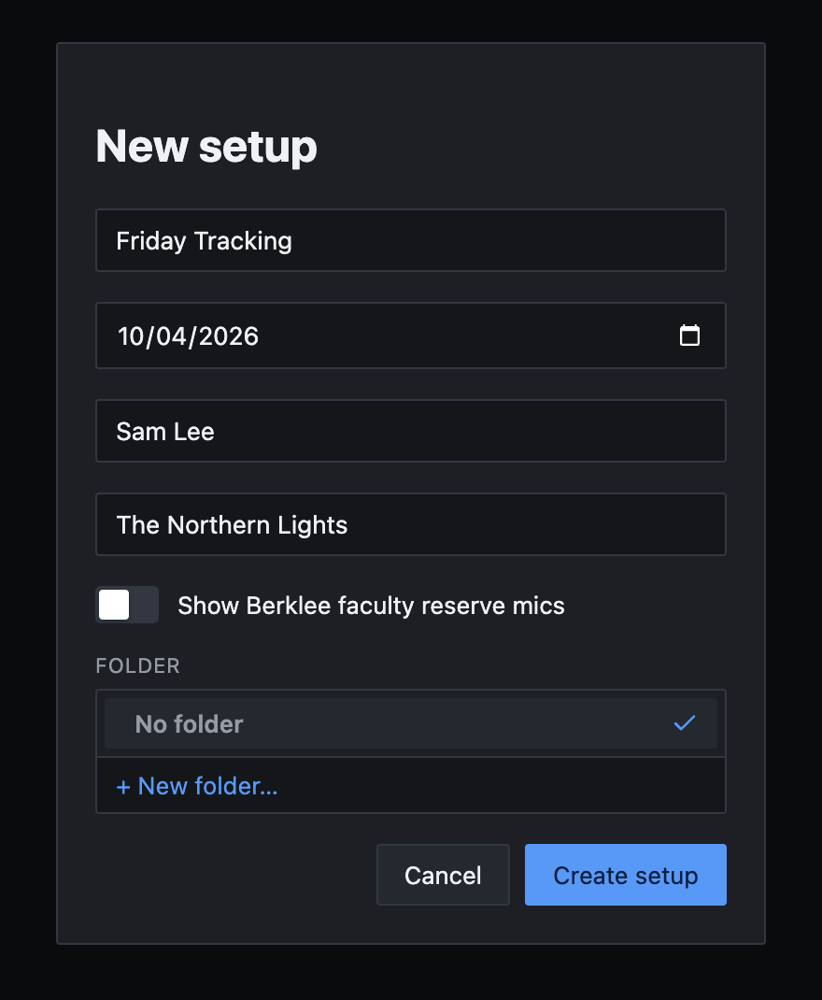
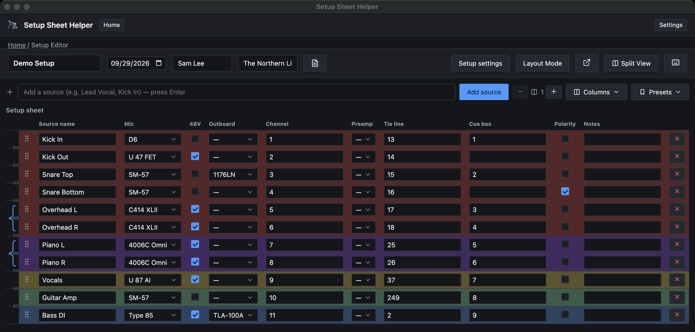

Part 1
Start here
This part takes you from a fresh install to a printed setup sheet in about five minutes. Each step points to the part of the manual that covers it in depth.
What Setup Sheet Helper does
Setup Sheet Helper plans a recording session and prints it. A setup has three parts:
- The setup sheet. One row per source, with its mic, 48V, outboard, channel, preamp, tie line and cue box. The app knows what gear the room has and how much of it is already in use, so nothing gets booked twice.
- The floor plan. Layout Mode puts the room's floor plan on screen. Drag instruments, notes and drawings onto it to show where everything goes.
- The PDF. The sheet and the floor plan print together, ready to hand to an assistant or tape to the console.

When you first open the app
The first time it opens, the app asks Pre-load Berklee studios and gear?

- Choose Yes, pre-load Berklee if you work in Berklee's studios. Their buildings, rooms and gear lists are ready to use straight away.
- Choose No, start blank otherwise. You'll add your own studio, or start with a quick setup (below).
You can change your mind at any time in Settings → General → Berklee features.
Your first setup in five steps
-
Pick a studio
On the home screen, the studios you can start from are under New Setup From Studio Template. Click one. Berklee's rooms are inside the Berklee folder, grouped by building.

Studios at the top, your saved setups underneath. -
Name the setup
In the New setup dialog, give the setup a name. The date starts as today. Engineer and Artist are optional, and so is the folder. Click Create setup.

TipSet Default engineer name in Settings → General and every new setup fills in the Engineer field for you.
-
Add your sources
Click the Add a source box at the top of the sheet, type a source such as Kick In, and press Return. The box stays ready for the next one, so you can type your whole input list without touching the mouse.
Rows appear in the order you add them. To move one, drag the handle at its left edge.

A setup sheet with its sources added and gear chosen. -
Choose mics and other gear
Click a row's Mic cell. Gear is grouped by where it comes from, with This Studio first, and then by manufacturer. Use the arrow keys or the mouse to find a model, or type in Search….
Each model shows how many are already taken, such as 2/5 in use. When every one is taken it's grayed out, so the same mic can't end up on two rows.

Picking a mic. The counts stop the same mic from being booked twice. Fill in Outboard and Preamp the same way, tick 48V where you need phantom power, and type the Channel, Tie line and Cue box numbers.
TipTo number a run of rows in one go, select them and use Number in the selection bar. Part 2 covers it.
-
Export the PDF
Press ⌘E, or choose File → Export PDF…. Choose what to include, click Export, and pick where to save the file.

That's a finished setup. There's no Save button to remember: the app saves as you work.
No studio yet?
Click Start a quick setup → on the home screen. You get a setup with no studio behind it. The gear cells become plain text boxes that suggest names as you type, drawn from every studio in the app.
A quick setup is good for a one-off session. For a room you work in often, set the studio up once and every new setup starts with its gear ready.
A tour of the editor
Here's what everything on the editor screen does.
- Setup name, session date, Engineer and Artist. Click to edit them in place.
- Session notes. The icon lights up when the setup has notes. They print under the title.
- Setup settings. The room layout, gear borrowed for this session, and Berklee options.
- Layout Mode. Switches to the floor plan (⌘L). On the floor plan it reads Table Mode and takes you back.
- Pop-out. Opens the floor plan in its own window, for a second screen.
- Split View. Opens a second setup side by side.
- Keyboard shortcuts. Jumps to Settings → Keybinds.
- Add a source. Type and press Return.
- Outboard columns. Adds or removes outboard slots on every row.
- Columns. Shows, hides and reorders this setup's columns.
- Presets. Loads or manages saved channel presets.
- Row handle. Drag to reorder. The link icons between rows pair two rows into a stereo pair.
Save status appears in the toolbar just right of the header fields: Unsaved changes, then Saving…, then Saved. If it ever reads Couldn't save — retrying, keep working. The app tries again every 10 seconds and saves as soon as it can.